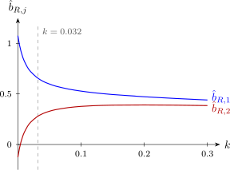

8.4 Remedies
More data, or a different model
If it is possible, the best remedy is more data, collected where the existing data are thin: off the line of Figure 15, at combinations of the regressors that break the pattern. This is often impossible in observational studies, and useless when the dependence is a constraint of the population. The model can then be respecified: regressors that measure nearly the same thing can be combined into one (in Example 8.2.3, an index such as \(x_1 + x_2\)), or one of them dropped, accepting the bias of Theorem 7.1.2 in exchange for precision. For polynomial models, centring \(x\) before forming \(x^2\) often removes most of the problem (Problem 8.5.2).
Ridge regression
A different approach accepts some bias in the estimates in return for a large reduction in variance.
Definition 8.4.1. For a constant \(k \ge 0\), the ridge estimator of the standardized coefficients is \[ \hat {\mathbf {b}}_R = (\mathbf {R} + k\mathbf {I})^{-1}\mathbf {r}_y . \] The constant \(k\) is the biasing parameter; \(k = 0\) gives least squares.
Adding \(k\) to the diagonal raises every eigenvalue from \(\lambda _j\) to \(\lambda _j + k\), so even a small \(k\) removes the near-singularity. Ridge regression is also least squares with a penalty: \(\hat {\mathbf {b}}_R\) minimises \(\|\mathbf {y}^* - \mathbf {Wb}\|^2 + k\|\mathbf {b}\|^2\) (Problem 8.5.3), so it shrinks the coefficients towards zero, counteracting the tendency of least squares to make them too long (Theorem 8.2.2).
The properties of the ridge estimator are clearest in the coordinates of the eigenvectors. Write \(\mathbf {R} = \mathbf {P}\boldsymbol \Lambda \mathbf {P}^\top \) and \(\boldsymbol \alpha = \mathbf {P}^\top \mathbf {b}\), the coefficients along the eigenvector directions, with estimates \(\hat {\boldsymbol \alpha } = \mathbf {P}^\top \hat {\mathbf {b}}\).
- (i)
- The components of \(\hat {\boldsymbol \alpha }\) are uncorrelated, with \(E(\hat \alpha _j) = \alpha _j\) and \(\operatorname {Var}(\hat \alpha _j) = \sigma _*^2/\lambda _j\).
- (ii)
- The ridge estimator shrinks each component: \(\hat \alpha _{R,j} = \dfrac {\lambda _j}{\lambda _j + k}\hat \alpha _j\).
- (iii)
- Its total mean squared error is \[ \mathrm {MSE}(k) = E\|\hat {\mathbf {b}}_R - \mathbf {b}\|^2 = \sum _j\frac {\sigma _*^2\lambda _j + k^2\alpha _j^2}{(\lambda _j + k)^2} . \]
- (iv)
- (Hoerl and Kennard) \(\mathrm {MSE}(k)\) is strictly decreasing for \(0 \le k < \sigma _*^2/\max _j\alpha _j^2\). Hence there is always a \(k > 0\) for which the ridge estimator has smaller total mean squared error than least squares.
Proof. (i) \(\operatorname {Var}(\hat {\boldsymbol \alpha }) = \mathbf {P}^\top (\sigma _*^2\mathbf {R}^{-1})\mathbf {P} = \sigma _*^2\mathbf {P}^\top \mathbf {P}\boldsymbol \Lambda ^{-1}\mathbf {P}^\top \mathbf {P} = \sigma _*^2\boldsymbol \Lambda ^{-1}\), a diagonal matrix; and \(E(\hat {\boldsymbol \alpha }) = \mathbf {P}^\top \mathbf {b} = \boldsymbol \alpha \).
(ii) By the normal equations \(\mathbf {r}_y = \mathbf {R}\hat {\mathbf {b}}\), so \(\hat {\mathbf {b}}_R = (\mathbf {R} + k\mathbf {I})^{-1}\mathbf {R}\hat {\mathbf {b}} = \mathbf {P}(\boldsymbol \Lambda + k\mathbf {I})^{-1}\boldsymbol \Lambda \mathbf {P}^\top \hat {\mathbf {b}}\), using \(\mathbf {R} + k\mathbf {I} = \mathbf {P}(\boldsymbol \Lambda + k\mathbf {I})\mathbf {P}^\top \). Multiply on the left by \(\mathbf {P}^\top \).
(iii) \(\mathbf {P}\) is orthogonal, so \(\|\hat {\mathbf {b}}_R - \mathbf {b}\|^2 = \|\hat {\boldsymbol \alpha }_R - \boldsymbol \alpha \|^2\), and each component’s mean squared error is its variance plus its squared bias. By (i) and (ii), with \(c_j = \lambda _j/(\lambda _j + k)\), the variance is \(c_j^2\sigma _*^2/\lambda _j = \sigma _*^2\lambda _j/(\lambda _j + k)^2\) and the bias is \((c_j - 1)\alpha _j = -k\alpha _j/(\lambda _j + k)\).
(iv) Differentiate one term of (iii) with respect to \(k\): \begin {align*} \frac {d}{dk}\,\frac {\sigma _*^2\lambda _j + k^2\alpha _j^2}{(\lambda _j + k)^2} &= \frac {2k\alpha _j^2(\lambda _j + k) - 2(\sigma _*^2\lambda _j + k^2\alpha _j^2)}{(\lambda _j + k)^3} \\ &= \frac {2\lambda _j(k\alpha _j^2 - \sigma _*^2)}{(\lambda _j + k)^3} . \end {align*}
If \(k < \sigma _*^2/\alpha _j^2\) for every \(j\), each derivative is negative, so \(\mathrm {MSE}(k)\) is strictly decreasing on that interval, which starts at \(k = 0\). □
The theorem shows where the gain comes from. Least squares estimates the component along a small eigenvalue with variance \(\sigma _*^2/\lambda _j\), which is huge. Ridge shrinks that component by the factor \(\lambda _j/(\lambda _j + k)\), which is far below \(1\) when \(\lambda _j\) is small compared with \(k\), while leaving the well-estimated components (large \(\lambda _j\)) almost untouched. A little bias buys a large cut in variance. The catch is that the best \(k\) depends on the unknown \(\boldsymbol \alpha \) and \(\sigma _*^2\).
Choosing \(k\)
Two common methods are:
- the ridge trace: plot the coefficients \(\hat b_{R,j}\) against \(k\), and choose the smallest \(k\) at which they have stabilised, with sensible signs and sizes, and with the residual mean square not much larger than at \(k = 0\);
- the formula of Hoerl, Kennard and Baldwin (1975), \[ \hat k = \frac {q\,\hat \sigma _*^2}{\hat {\mathbf {b}}^\top \hat {\mathbf {b}}} , \] where \(q\) is the number of regressors. It is the \(k\) that minimises the mean squared error of Theorem 8.4.2(iii) when all the \(\alpha _j\) are equal (Problem 8.5.6).
Either way \(k\) is chosen from the data, so the usual tests and intervals do not apply to the ridge estimates; ridge regression is a tool for estimation and prediction, not for testing.
Example 8.4.3. Apply ridge regression to the appliance data of Example 8.2.3.
Solution. In correlation form, \(r_{12} = 0.98563\), \(r_{1y} = 0.95182\) and \(r_{2y} = 0.93455\), and the least-squares standardized coefficients are \(\hat b_1 = 1.0760\) and \(\hat b_2 = -0.1260\). (Check: \(\hat \beta _1 = 1.0760\sqrt {163.5/65.5} = 1.70\).) For a given \(k\), \[ \hat {\mathbf {b}}_R = \frac {1}{(1 + k)^2 - r_{12}^2}\begin {bmatrix} (1 + k)r_{1y} - r_{12}r_{2y} \\ (1 + k)r_{2y} - r_{12}r_{1y} \end {bmatrix} . \] For instance at \(k = 0.05\), \((1.05)^2 - 0.97147 = 0.13103\), and \[ \hat {\mathbf {b}}_R = \frac {1}{0.13103}\begin {bmatrix} 0.99941 - 0.92112 \\ 0.98128 - 0.93815 \end {bmatrix} = \begin {bmatrix} 0.5975 \\ 0.3292 \end {bmatrix} . \] Converting each to the original scale with \(\hat \beta _j = \hat b_j\sqrt {SS_T/S_{jj}}\):
| \(k\) | \(\hat b_{R,1}\) | \(\hat b_{R,2}\) | \(\hat \beta _{R,1}\) | \(\hat \beta _{R,2}\) |
| 0 | 1.076 | \(-0.126\) | 1.700 | \(-0.200\) |
| 0.005 | 0.920 | 0.028 | 1.453 | 0.044 |
| 0.01 | 0.827 | 0.118 | 1.307 | 0.188 |
| 0.02 | 0.722 | 0.219 | 1.140 | 0.348 |
| 0.05 | 0.598 | 0.329 | 0.944 | 0.523 |
| 0.1 | 0.528 | 0.377 | 0.834 | 0.598 |
| 0.2 | 0.472 | 0.391 | 0.746 | 0.621 |
The ridge trace, Figure 16, shows the two coefficients moving rapidly towards each other for small \(k\), the sign of \(\hat b_2\) turning positive by \(k = 0.005\), and both settling down by about \(k = 0.05\). For the Hoerl–Kennard–Baldwin value, \(\hat \sigma _*^2 = MS_{\mathrm {Res}}/SS_T = 3.06/163.5 = 0.01872\) and \(\hat {\mathbf {b}}^\top \hat {\mathbf {b}} = 1.0760^2 + 0.1260^2 = 1.1736\), so \[ \hat k = \frac {2 \times 0.01872}{1.1736} = 0.032 , \] giving \(\hat {\mathbf {b}}_R = (0.654,\ 0.281)\) and, on the original scale, with \(\hat \beta _{R,0} = \bar y - \hat \beta _{R,1}\bar x_1 - \hat \beta _{R,2}\bar x_2\), \[ \hat y_R = 4.00 + 1.03x_1 + 0.45x_2 . \] Both coefficients are now positive and of sensible size: about one unit of use per appliance, and a further half unit for each one used daily. The fit has hardly suffered: \(R^2\) falls from \(0.906\) to \(0.901\).
The theory explains the result. The eigenvalues are \(1.9856\) and \(0.0144\), and the least-squares components along the eigenvectors are \(\hat \alpha _1 = (1.0760 - 0.1260)/\sqrt 2 = 0.672\) and \(\hat \alpha _2 = (1.0760 + 0.1260)/\sqrt 2 = 0.850\), the latter with standard error \(\sqrt {0.01872/0.0144} = 1.14\), larger than the estimate itself. At \(k = 0.032\) ridge multiplies \(\hat \alpha _1\) by \(1.9856/2.0176 = 0.98\), leaving it almost unchanged, and \(\hat \alpha _2\) by \(0.0144/0.0464 = 0.31\), removing most of the noise in the poorly determined direction. If the estimates were the true values, Theorem 8.4.2(iii) would give \(\mathrm {MSE}(0) = 1.31\) and \(\mathrm {MSE}(0.032) = 0.48\), a reduction by more than half.

Remark (Principal components). Principal-components regression works directly with the components \(\alpha _j\). Since the components along small eigenvalues are almost impossible to estimate, set them to zero and keep only the others. In Example 8.2.3 this would keep only \(\hat \alpha _1 = 0.672\), giving \[ \hat {\mathbf {b}} = 0.672 \times \tfrac {1}{\sqrt 2}(1, 1) = (0.475,\ 0.475) , \] equal standardized coefficients for the two regressors, which is the same as regressing on their (standardized) sum. Ridge regression shrinks the poorly determined components smoothly; principal-components regression removes them altogether.
Questions on this section
Stuck on something here? Ask below and it stays attached to this topic.